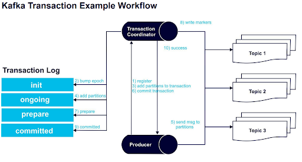
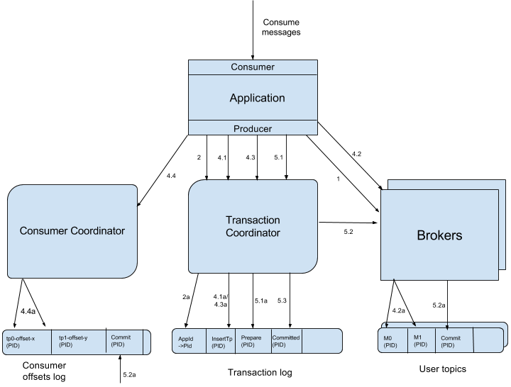

Kafka-中的恰好一次交付和事物性消息【翻译】
本文为 KIP-98 - Exactly Once Delivery and Transactional Messaging 的部分翻译
动机
本文档概述了增强 Kafka 消息交付语义的提议。这建立在之前已经完成的重要工作的基础上，特别是在幂等生产者和Kafka 中的事务性消息传递。
Kafka 目前提供至少一次（at least once）语义，即。 在针对可靠性进行调整时，用户可以保证每次写入的消息将至少持久化一次，而不会丢失数据。 由于生产者重试，流中可能会出现重复。 例如，代理可能会在提交消息和向生产者发送确认之间崩溃，导致生产者重试，从而导致流中出现重复的消息。
消息传递系统的用户极大地受益于更严格的幂等生产者语义，即。每个消息写入都将被持久化一次，不会重复，也不会丢失数据 - 即使在客户端重试或代理失败的情况下也是如此。这些更强的语义不仅使编写应用程序更容易，而且也让更多的应用程序可以使用给定消息传递系统。
但是，幂等生产者不为跨多个 TopicPartition 的写入提供保证。为此，人们需要更强的事物保证，即。能够以原子方式写入多个 TopicPartition。原子地，我们的意思是能够将一组消息作为一个单元跨 TopicPartitions 提交：要么提交所有消息，要么都不提交。
流处理应用程序是“消费(consume)-转换(transform)-生产(produce)”任务的管道，当流的重复处理不可接受时，绝对需要事务保证。因此，向 Kafka（一个流处理平台）添加事务保证使其不仅对流处理有用，而且对各种其他应用程序也更有用。
关于事物和流的一些东西
在上一节中，我们提到事务的主要动机是在 Kafka Streams 中启用一次处理。值得深入研究这个用例，因为它激发了我们设计中的许多权衡。
回想一下，使用 Kafka Streams 的数据转换通常通过多个流处理器进行，每个流处理器都由 Kafka 主题连接。这种设置被称为流拓扑，基本上是一个有向无环图 - DAG，其中流处理器是节点，连接的 Kafka 主题是顶点。这种模式是所有流架构的典型特征。您可以在此处阅读有关 Kafka 流架构的更多信息。
因此，Kafka 流的事务本质上将包含输入消息、本地状态存储的更新和输出消息。在事务中包含输入偏移量会促使将 sendOffsets API 添加到生产者接口，如下所述。更多细节将在单独的 KIP 中提供。
此外，流拓扑可以变得非常深——10 个阶段并不少见。如果输出消息仅在事务提交时具体化，那么 N 阶段深度的拓扑将需要 N x T 时间来处理其输入，其中 T 是单个事务的平均时间。因此 Kafka Streams 需要推测执行，其中输出消息甚至在提交之前就可以被下游处理器读取。否则，对于严格的流处理应用程序来说，事务将不是一个选项。这激发了稍后描述的“读未提交 - read uncommitted”消费者模式。
这是我们选择针对流用例进行优化的两个特定实例。当读者阅读本文档时，我们鼓励他/她牢记这个用例，因为它激发了提案的大部分内容。

公共接口
生产者接口
生产者将获得五个新方法（initTransactions、beginTransaction、sendOffsets、commitTransaction、abortTransaction），并更新 send 方法以抛出新异常。详情如下：
1 | public interface Producer<K,V> extends Closeable { |
OutOfOrderSequence 异常
如果代理检测到数据丢失，生产者将引发 OutOfOrderSequenceException。 换句话说，如果代理接收到的序列号大于它预期的序列号。 此异常将在 Future 中返回并传递给回调（如果有）。 这是一个致命的异常，未来对 Producer 方法（如 send、beginTransaction、commitTransaction 等）的调用将引发 IlegalStateException。
示例
这是一个简单的应用程序，它演示了上面介绍的 API 的使用。
1 | public class KafkaTransactionsExample { |
相关配置
代理配置
| 配置 Key | 描述 |
|---|---|
| transactional.id.timeout.ms | 事务协调器在主动使生产者 TransactionalId 过期而不从其接收任何事务状态更新之前将等待的最长时间（以毫秒为单位）。 默认值为 604800000（7 天）。这允许定期的每周生产者作业来维护它们的 ID。 |
| max.transaction.timeout.ms | 事务的最大允许超时时间。如果客户端请求事务的时间超过此时间，则代理将在 InitPidRequest 中返回 InvalidTransactionTimeout 错误。这可以防止客户端超时过长，这可能会阻止消费者从事务包含的主题中读取消息。 默认值为 900000（15 分钟）。这是需要发送消息事务的时间段的保守上限。 |
| transaction.state.log.replication.factor | 事务状态主题的副本数。默认: 3 |
| transaction.state.log.num.partitions | 事务状态主题的分区数。默认: 50 |
| transaction.state.log.min.isr | 必须考虑联机事务状态主题的每个分区的最小同步中的副本数。默认: 2 |
| transaction.state.log.segment.bytes | 事务状态主题的段大小。默认: 104857600 bytes. |
生产者配置
| 配置 Key | 描述 |
|---|---|
| enable.idempotence | 是否启用幂等（默认为 false）。如果禁用，生产者将不会在生产请求中设置 PID 字段，并且当前生产者交付语义将生效。请注意，必须启用幂等性才能使用事务。 当启用幂等性时，我们强制执行 acks=all、retries > 1 和 max.inflight.requests.per.connection=1。如果没有这些配置的这些值，我们就不能保证幂等性。 如果应用程序未明确覆盖这些设置，则当启用幂等性时，生产者将设置 acks=all、retries=Integer.MAX_VALUE 和 max.inflight.requests.per.connection=1。 |
| transaction.timeout.ms | 事务协调器在主动中止正在进行的事务之前等待来自生产者的事务状态更新的最长时间（以毫秒为单位）。 此配置值将与 InitPidRequest 一起发送到事务协调器。如果此值大于代理中的 max.transaction.timeout.ms 设置，则请求将失败并显示“InvalidTransactionTimeout”错误。默认为 60000。这使得事务不会阻塞下游消费超过一分钟，这在实时应用程序中通常是允许的。 |
| transactional.id | 用于事务性交付的 TransactionalId。 这实现了跨越多个生产者会话的可靠性语义，因为它允许客户端保证使用相同 TransactionalId 的事务在开始任何新事务之前已经完成。如果未提供 TransactionalId，则生产者仅限于幂等交付。 请注意，如果配置了 TransactionalId，则必须启用 enable.idempotence。默认为空，表示不能使用事务。 |
消费者配置
| 配置 Key | 说明 |
|---|---|
| isolation.level | 以下是可能的值（默认为 read_uncommitted）：read_uncommitted: 以偏移量顺序消费已提交和未提交的消息。read_committed: 仅以偏移顺序消费非事务性消息或已提交的事务性消息。为了保持偏移顺序，此设置意味着我们必须在消费者中缓冲消息，直到我们看到给定事务中的所有消息。 |
保证概要
生产者幂等性保证
为了实现幂等生产者语义，我们引入了生产者 ID（以下称为 PID）和 Kafka 消息的序列号的概念。在初始化期间，每个新生产者都将被分配一个唯一的 PID。 PID 分配对用户完全透明，永远不会暴漏给客户端。
对于给定的 PID，序列号将从零开始并单调递增，每个主题分区（topic partition）产生一个序列号。生产者发送的每条消息的序列号都会增加。类似地，代理将为该主题分区提交的每条消息增加与 PID -> 主题分区对关联的序列号。最后，代理将拒绝来自生产者的消息，除非它的序列号恰好比来自该 PID -> 主题分区对的最后提交的消息序列号大 1。
这确保了即使生产者必须在失败时重试请求，每条消息也将仅在日志中持久化一次。此外，由于生产者的每个新实例都分配了一个新的、唯一的 PID，我们只能保证在单个生产者会话中的幂等生产。这些语义已在本文档之前讨论过。
这些幂等生产者语义对于无状态应用程序（如指标跟踪和审计）可能很有用。
事物保证
其核心，事务保证使应用程序能够以原子方式生成多个 TopicPartition，即。对这些 TopicPartition 的所有写入都将作为一个单元成功或失败。
此外，由于消费者进度被记录为对 offsets 主题的写入，因此利用上述功能使应用程序能够将消费和生产的消息批处理到单个原子单元中，即。 只有当整个“consume-transform-produce”完整执行时，一组消息才可以被视为已消费。
此外，有状态应用程序还将能够确保应用程序的多个会话之间的连续性。换句话说，Kafka 可以保证跨应用程序反弹的幂等生产和事务恢复。
为了实现这一点，我们要求应用程序提供一个在应用程序的所有会话中都稳定的唯一 ID。对于本文档的其余部分，我们将此类 ID 称为 TransactionalId。虽然 TransactionalId 和内部 PID 之间可能存在 1-1 映射，但主要区别在于 TransactionalId 是由用户提供的，并且是下面描述的跨生产者会话的幂等保证。
当提供这样的 TransactionalId 时，Kafka 将保证：
- 恰好只有一个具有给定 TransactionalId 的活动生产者。这是通过在具有相同 TransactionalId 的新实例上线时隔离旧代来实现的。
- 跨应用程序会话的事务恢复。如果应用程序实例死亡，下一个实例可以保证任何未完成的事务都已完成（无论是中止还是提交），从而在恢复工作之前使新实例处于干净状态。
请注意，这里提到的事务保证是从生产者的角度来看的。在消费者方面，保障力度稍弱。特别是，我们不能保证一个提交的事务的所有消息都会被一起消费。这有几个原因：
- 对于压缩主题，事务的某些消息可能会被更新的版本覆盖。
- 事务可能跨越日志段。因此，当旧段被删除时，我们可能会在事务的第一部分丢失一些消息。
- 消费者可能会寻求事物中的任意点，因此会错过一些初始消息。
- 消费者可能不会从参与事物的所有分区中消费。因此，他们将永远无法读取包含事物的所有消息。
核心概念
为了实现事物，即。确保以原子方式生成和使用一组消息，我们引入了几个新概念：
- 我们引入了一个称为
事务协调器（Transaction Coordinator）的新实体。与消费者组协调器类似，每个生产者都分配了一个事务协调器，所有分配 PID 和管理事务的逻辑都由事务协调器完成。 - 我们引入了一个新的内部 kafka 主题，称为
事务日志（Transaction Log）。与Consumer Offsets 主题类似，事务日志是每个事务的持久和复制记录。事务日志是事务协调器的状态存储，日志最新版本的快照封装了每个活动事务的当前状态。 - 我们引入了
控制消息（Control Messages）的概念。这些是写入用户主题的特殊消息，由客户端处理，但从未向用户公开。例如，它们用于让代理向消费者指示先前获取的消息是否已被原子提交。之前已经在 Support control messages in Kafka 提出了控制消息。 - 我们引入了
TransactionalId的概念，使用户能够以持久的方式唯一标识生产者。具有相同TransactionalId的生产者的不同实例将能够恢复（或中止）由前一个实例实例化的任何事务。 - 我们引入了
生产者时代（producer epoch）的概念，这使我们能够确保只有一个具有给定TransactionalId的生产者的合法活动实例，从而使我们能够在发生故障时维护事务保证。
除了上述新概念之外，我们还引入了新的请求类型、现有请求的新版本和核心消息格式的新版本，以支持事务。所有这些的细节将推迟到其他文件。
数据流

在上图中，矩形边框代表不同的机器。底部的圆角框代表 Kafka TopicPartitions，对角线不同圆角的框代表在 broker 内部运行的逻辑实体。
每个箭头代表一个 RPC 或对 Kafka 主题的写入。这些操作按每个箭头旁边的数字指示的顺序进行。下面的部分编号以匹配上图中的操作，并描述相关操作。
1. 寻找事务协调器 —— FindCoordinatorRequest
由于事务协调器处于分配 PID 和管理事务的中心，因此生产者要做的第一件事就是发出 FindCoordinatorRequest到任意的代理以发现其协调器的位置。以前称为 GroupCoordinatorRequest，但为了更简单的用途而重命名。
1 | 发生在 Client 的 Producer：KafkaProducer:TransactionManager.lookupCoordinator |
2. 获取生产者 ID —— InitProducerIdRequest
在发现其协调器的位置后，下一步是获取生产者的 PID。这是通过向事务协调器发出 InitProducerIdRequest 来实现的。
1 | 发生在 Client 的 Producer：KafkaProducer:TransactionManager.initializeTransactions |
2.1 当指定 TransactionalId 时
如果设置了 transactional.id 配置，则此 InitProducerIdRequest 携带 TransactionalId 一起传递，并在步骤 2a 中将相应 PID 的映射记录在事务日志中。这使我们能够将 TransactionalId 的相同 PID 返回给生产者的未来实例，从而能够恢复或中止先前未完成的交易。
1 | 发生在 Broker Server 的 TransactionCoordinator：TransactionCoordinator.handleInitProducerId |
除了返回 PID 之外，InitProducerIdRequest 还执行以下任务：
- 提升 PID 的时代 - epoch，以便生产者的任何先前僵尸实例都被隔离，并且无法继续其事务。
- 恢复（前滚或回滚）生产者的前一个实例留下的任何未完成的事务。
InitProducerIdRequest 的处理是同步的。一旦它返回，生产者就可以发送数据并开始新的事务。
2.2 未指定 TransactionalId 时
如果配置中没有指定 TransactionalId，则分配一个新的 PID，生产者在单个会话中只享受幂等语义和事务语义。
1 | 发生在 Broker Server 的 TransactionCoordinator：TransactionCoordinator.handleInitProducerId |
通过 Zookeeper 来保证分布式下产生唯一 ID
3. 开始事物 – beginTransaction() API
新的 KafkaProducer 将有一个 beginTransaction() 方法，必须调用该方法来表示新事务的开始。生产者记录本地状态，表明事物已经开始，但从协调者的角度来看，在发送第一条记录之前，事物不会开始。
4. 消费-转换-生产循环
在这个阶段，生产者开始消费-转换-生产构成事物的消息。这是一个漫长的阶段，可能包含多个请求。
4.1 AddPartitionsToTxnRequest
第一次将新 TopicPartition 作为事务的一部分写入时，生产者将此请求发送到事务协调器。将此 TopicPartition 添加到事务中由协调器在步骤 4.1a 中记录。我们需要这些信息，以便我们可以将提交或中止标记写入每个 TopicPartition（有关详细信息，请参阅第 5.2 节）。如果这是添加到事务的第一个分区，协调器还将启动事务计时器。
1 | 发生在 Broker Server 的 TransactionCoordinator：TransactionCoordinator.handleAddPartitionsToTransaction |
4.2 ProduceRequest
生产者通过一个或多个 ProduceRequests（从生产者的 send 方法触发）向用户的 TopicPartitions 写入一堆消息。这些请求包括 PID 、纪元和序列号，如 4.2a 中所示。
在提交事务之前，消费的偏移量在外部是不可见的，我们现在将讨论这个过程。
1 | 发生在 Client 的 Producer：KafkaProducer.send |
5. 提交或中止事物
写入数据后，用户必须调用 KafkaProducer 的新 commitTransaction 或 abortTransaction 方法。这些方法将分别开始提交或中止事务的过程。
1 | 发生在 Client 的 Producer：KafkaProducer:commitTransaction|abortTransaction |
5.1 EndTxnRequest
当生产者完成事物时，必须调用新引入的 KafkaProducer.endTransaction 或 KafkaProducer.abortTransaction。前者使下游消费者可以使用 4 中产生的数据。后者有效地从日志中删除了生成的数据：用户永远无法访问它，即。下游消费者将读取并丢弃中止的消息。
无论调用哪个生产者方法，生产者都会向事务协调器发出 EndTxnRequest，并带有指示事务是提交还是中止的附加数据。收到此请求后，协调器：
- 将
PREPARE_COMMIT或PREPARE_ABORT消息写入事务日志。 （步骤5.1a） - 开始通过
WriteTxnMarkerRequest将称为COMMIT（或ABORT）标记的命令消息写入用户日志的过程。 （见下文第 5.2 节）。 - 最后将
COMMITTED（或ABORTED）消息写入事务日志。 （见下文 5.3）。
1 | 发生在 Broker Server 的 TransactionCoordinator：TransactionCoordinator.handleEndTransaction |
5.2 WriteTxnMarkerRequest
该请求由事务协调器向作为事务一部分的每个 TopicPartition 的领导者发出。收到此请求后，每个代理都会将 COMMIT(PID) 或 ABORT(PID) 控制消息写入用户日志。 （步骤 5.2a）
此消息向消费者指示具有给定 PID 的消息是必须交付给用户还是丢弃。因此，消费者将缓冲具有 PID 的消息，直到它读取相应的 COMMIT 或 ABORT 消息，此时它将分别交付或丢弃消息。
请注意，如果 __consumer-offsets 主题是事务中的 TopicPartitions 之一，则提交（或中止）标记也会写入消费者偏移主题日志，并通知消费者协调器它需要在以下情况下实现这些偏移量：在中止的情况下提交或忽略它们（左侧的步骤 5.2a）。
5.3 写入最后的 Commit 或 Abort 消息
在所有提交或中止标记写入数据日志后，事务协调器将最终的 COMMITTED 或 ABORTED 消息写入事务日志，表明事务已完成（图中的步骤 5.3）。此时，事务日志中与事务有关的大部分消息都可以删除。
我们只需要保留已完成交易的 PID 和时间戳，因此我们最终可以删除生产者的 TransactionalId->PID 映射。请参阅下面的过期 PID 部分。